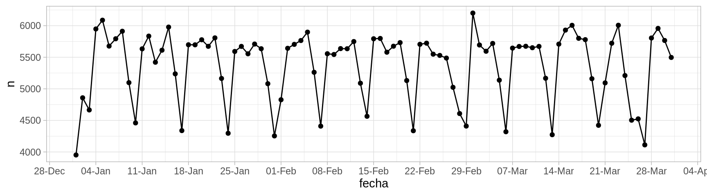
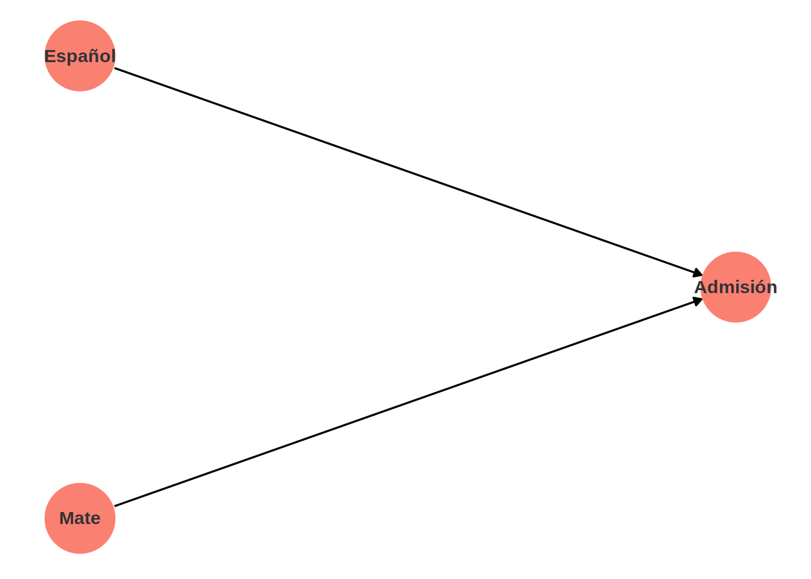
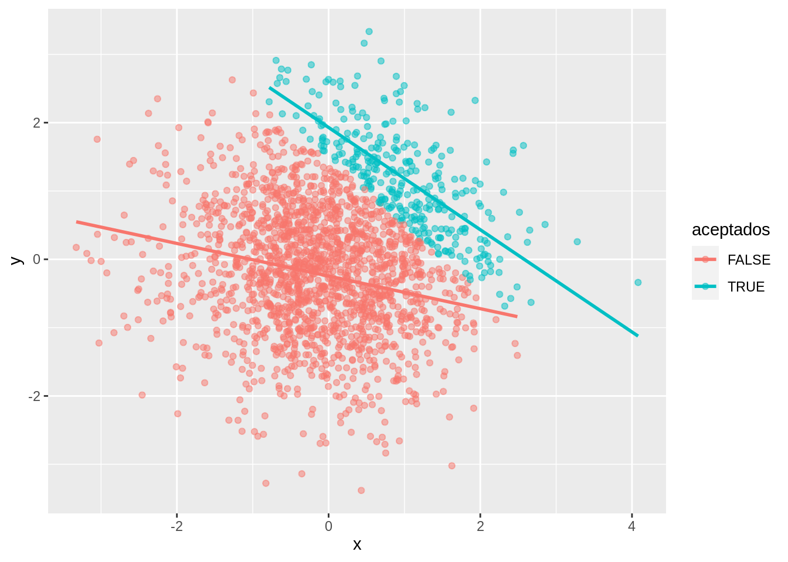

Código
library(tidyverse)
library(lubridate)
library(kableExtra)
nacimientos <- read_rds("datos/nacimientos/natalidad.rds") |>
ungroup() |>
filter(year(fecha) == 2016, month(fecha) <= 3)El término “ciencia de datos” surgió recientemente, y hay discusión acerca de qué tan apropiado es el término, si es correcto llamarla “ciencia”, y en general, en cómo definirla exactamente. En este curso tomamos el punto de vista de que:
Desde este punto de vista, el estándar de validez más importante en la ciencia de datos (Tukey (1962)) es su funcionamiento en la práctica, y no la adherencia a argumentos teóricos, matemáticos o estadísticos.
Igualmente puede ser difícil definir qué es la estadística (algunos la ven como una parte o rama de las matemáticas, en un extremo, y otros la consideran algo más cercano al análisis de datos). En cualquier caso:
Cuando observamos un conjunto de datos, independientemente de su tamaño, el paso inicial más importante es entender bajo qué proceso se generan los datos.
Comenzamos con un ejemplo de análisis exploratorio. Consideremos una parte de los datos de nacimientos por día del INEGI de 1999 a 2016. Consideraremos sólo tres meses: enero a marzo de 2016. Estos datos, por su tamaño, pueden representarse de manera razonablemente efectiva en una visualización de serie de tiempo
library(tidyverse)
library(lubridate)
library(kableExtra)
nacimientos <- read_rds("datos/nacimientos/natalidad.rds") |>
ungroup() |>
filter(year(fecha) == 2016, month(fecha) <= 3)Examinamos partes del contenido de la tabla:
tab_1 <- nacimientos |>
select(fecha, n) |>
slice_head(n = 5)
tab_2 <- nacimientos |>
select(fecha, n) |>
slice_tail(n = 5)
kable(list(tab_1, tab_2)) |> kable_styling()
|
|
En un examen rápido de estos números no vemos nada fuera de orden. Los datos tienen forma de serie de tiempo regularmente espaciada (un dato para cada día). Podemos graficar de manera simple como sigue:
ggplot(nacimientos, aes(x = fecha, y = n)) +
geom_point() +
geom_line() +
scale_x_date(breaks = "1 week", date_labels = "%d-%b") 
Esta es una descripción de los datos, que quizá no es muy compacta pero muestra varios aspectos importantes. En este caso notamos algunos patrones que saltan a la vista. Podemos marcar los domingos de cada semana:
domingos_tbl <- nacimientos |>
filter(weekdays(fecha) == "Sunday")
ggplot(nacimientos, aes(x = fecha, y = n)) +
geom_vline(aes(xintercept = fecha), domingos_tbl, colour = "salmon") +
geom_point() +
geom_line() +
scale_x_date(breaks = "1 week", date_labels = "%d-%b") Observamos que los domingos ocurren menos nacimientos y los sábados también ocurren relativamente menos nacimentos. ¿Por qué crees que sea esto?
Adicionalmente a estos patrones observamos otros aspectos interesantes:
La confirmación de estas hipótesis, dependiendo de su forma, puede ser relativamente simple (por ejemplo ver una serie más larga de domingos comparados con otros días de la semana) hasta muy compleja (investigar preferencias de madres, de doctores o de hospitales, costumbres y actitudes, procesos en el registro civil, etc.) En todo caso, una descripción correcta de estos datos requiere conocer tanto hechos generales como conocimiento detallado de prácticas relacionadas con la natalidad y el registro de nacimientos.
Este es un estudio real acerca de tratamientos para cálculos renales (Julious y Mullee (1994)). Pacientes se asignaron de una forma no controlada a dos tipos de tratamientos para reducir cálculos renales. Para cada paciente, conocemos el tipo de ćalculos que tenía (grandes o chicos) y si el tratamiento tuvo éxito o no.
La tabla original tiene 700 renglones (cada renglón es un paciente)
calculos <- read_csv("./datos/kidney_stone_data.csv")
names(calculos) <- c("tratamiento", "tamaño", "éxito")
calculos <- calculos |>
mutate(tamaño = ifelse(tamaño == "large", "grandes", "chicos")) |>
mutate(resultado = ifelse(éxito == 1, "mejora", "sin_mejora")) |>
select(tratamiento, tamaño, resultado)
nrow(calculos)[1] 700y se ve como sigue (muestreamos algunos renglones):
calculos |>
sample_n(20) |>
kable()| tratamiento | tamaño | resultado |
|---|---|---|
| A | grandes | mejora |
| A | chicos | mejora |
| B | chicos | mejora |
| B | chicos | mejora |
| A | chicos | sin_mejora |
| B | chicos | mejora |
| A | chicos | mejora |
| A | chicos | mejora |
| A | grandes | mejora |
| B | chicos | mejora |
| B | chicos | mejora |
| B | grandes | sin_mejora |
| A | grandes | mejora |
| A | chicos | mejora |
| B | chicos | mejora |
| A | grandes | mejora |
| B | chicos | mejora |
| A | grandes | sin_mejora |
| A | grandes | mejora |
| A | chicos | mejora |
Aunque estos datos contienen información de 700 pacientes, los datos pueden resumirse sin pérdida de información contando como sigue:
calculos_agregada <- calculos |>
group_by(tratamiento, tamaño, resultado) |>
count()
calculos_agregada |> kable()| tratamiento | tamaño | resultado | n |
|---|---|---|---|
| A | chicos | mejora | 81 |
| A | chicos | sin_mejora | 6 |
| A | grandes | mejora | 192 |
| A | grandes | sin_mejora | 71 |
| B | chicos | mejora | 234 |
| B | chicos | sin_mejora | 36 |
| B | grandes | mejora | 55 |
| B | grandes | sin_mejora | 25 |
Este resumen no es muy informativo, pero al menos vemos qué valores aparecen en cada columna de la tabla. Como en este caso nos interesa principalmente la tasa de éxito de cada tratamiento, podemos mejorar mostrando como sigue:
calculos_agregada |> pivot_wider(names_from = resultado, values_from = n) |>
mutate(total = mejora + sin_mejora) |>
mutate(prop_mejora = round(mejora / total, 2)) |>
select(tratamiento, tamaño, total, prop_mejora) |>
arrange(tamaño) |>
kable()| tratamiento | tamaño | total | prop_mejora |
|---|---|---|---|
| A | chicos | 87 | 0.93 |
| B | chicos | 270 | 0.87 |
| A | grandes | 263 | 0.73 |
| B | grandes | 80 | 0.69 |
Esta tabla descriptiva es una reescritura de los datos, y no hemos resumido nada todavía. Pero es apropiada para empezar a contestar la pregunta:
Supongamos que otro analista decide comparar los pacientes que recibieron cada tratamiento, ignorando la variable de tamaño:
calculos |> group_by(tratamiento) |>
summarise(prop_mejora = mean(resultado == "mejora") |> round(2)) |>
kable()| tratamiento | prop_mejora |
|---|---|
| A | 0.78 |
| B | 0.83 |
y parece ser que el tratamiento \(B\) es mejor que el \(A\). Esta es una paradoja (un ejemplo de la paradoja de Simpson) . Si un médico no sabe que tipo de cálculos tiene el paciente, ¿entonces debería recetar \(B\)? ¿Si sabe debería recetar \(A\)? Esta discusión parece no tener mucho sentido.
Podemos investigar por qué está pasando esto considerando la siguiente tabla, que solo examina cómo se asignó el tratamiento dependiendo del tipo de cálculos de cada paciente:
calculos |> group_by(tratamiento, tamaño) |> count() |>
kable()| tratamiento | tamaño | n |
|---|---|---|
| A | chicos | 87 |
| A | grandes | 263 |
| B | chicos | 270 |
| B | grandes | 80 |
Nuestra hipótesis aquí es que la decisión de qué tratamiento usar depende del tamaño de los cálculos. En este caso, hay una decisión pues A es una cirugía y B es un procedimiento menos invasivo, y se prefiere utilizar el tratamiento \(A\) para cálculos grandes, y \(B\) para cálculos chicos. Esto quiere decir que en la tabla total el tratamiento \(A\) está en desventaja porque se usa en casos más difíciles, pero el tratamiento \(A\) parece ser en general mejor. La razón es probablemente un proceso de optimización de recursos y riesgo que hacen los doctores.
Igual que en el ejemplo anterior, los resúmenes descriptivos están acompañados de hipótesis acerca del proceso generador de datos, y esto ilumina lo que estamos observando y nos guía hacia descripciones provechosas de los datos. Las explicaciones no son tan simples y, otra vez, interviene el comportamiento de doctores, tratamientos, y distintos tipos de padecimientos.
Contrastemos el ejemplo anterior usando exactamente los mismos datos, pero con una interpretación diferente. En este caso, los tratamientos son para mejorar alguna enfermedad del corazón. Sabemos que parte del efecto de este tratamiento ocurre gracias a una baja en presión arterial de los pacientes, así que después de administrar el tratamiento, se toma la presión arterial de los pacientes. Ahora tenemos la tabla agregada y desagregada como sigue:
corazon <- calculos |>
select(tratamiento, presión = tamaño, resultado) |>
mutate(presión = ifelse(presión == "grandes", "alta", "baja"))
corazon_agregada <- corazon |>
group_by(tratamiento, presión, resultado) |>
count()
corazon_agregada |> pivot_wider(names_from = resultado, values_from = n) |>
mutate(total = mejora + sin_mejora) |>
mutate(prop_mejora = round(mejora / total, 2)) |>
select(tratamiento, presión, total, prop_mejora) |>
arrange(presión) |>
kable()| tratamiento | presión | total | prop_mejora |
|---|---|---|---|
| A | alta | 263 | 0.73 |
| B | alta | 80 | 0.69 |
| A | baja | 87 | 0.93 |
| B | baja | 270 | 0.87 |
corazon |> group_by(tratamiento) |>
summarise(prop_mejora = mean(resultado == "mejora") |> round(2)) |>
kable()| tratamiento | prop_mejora |
|---|---|
| A | 0.78 |
| B | 0.83 |
¿Cuál creemos que es el mejor tratamiento en este caso? ¿Deberíamos usar la tabla agregada o la desagregada por presión?
Podemos utilizar diagramas causales introducidos por Judea Pearl (Pearl, Glymour, y Jewell (2016)) para explicar por qué el análisis se hace de manera diferente en cada uno de los casos de arriba. Los diagramas causales son representaciones de nuestro conocimiento de dominio acerca de cómo se relacionan de manera causal las variables de interés. En el caso de cálculos renales, podemos escribir el diagrama como sigue:
library(dagitty)
library(ggdag)
dag_1 <- dagitty('dag{"Tratamiento" [exposure,pos="-3,0"]
"Resultado" [outcome,pos="3,0"]
"Tamaño" [pos="0,1"]
"Tamaño" -> "Tratamiento"
"Tamaño" -> "Resultado"
"Tratamiento" -> "Resultado"
}')
dag_1_tidy <- tidy_dagitty(dag_1)
dag_1_tidy |>
ggplot(aes(x = x, y = y, xend = xend, yend = yend )) +
geom_dag_edges() +
geom_dag_point(colour = "salmon", size = 20) +
geom_dag_text(colour = "gray20") +
theme_dag() 
Sin embargo, en el segundo ejemplo tenemos:
library(dagitty)
library(ggdag)
dag_1 <- dagitty('dag{"Tratamiento" [exposure,pos="-3,0"]
"Resultado" [outcome,pos="3,0"]
"Presión" [pos="0,1"]
"Tratamiento" -> "Presión"
"Presión" -> "Resultado"
"Tratamiento" -> "Resultado"
}')
dag_1_tidy <- tidy_dagitty(dag_1)
dag_1_tidy |>
ggplot(aes(x = x, y = y, xend = xend, yend = yend )) +
geom_dag_edges() +
geom_dag_point(colour = "salmon", size = 20) +
geom_dag_text(colour = "gray20") +
theme_dag()
Adicionalmente, en ambos ejemplos, estamos suponiendo que no existen otras variables confusoras que puedan afectar nuestro análisis. Qué tan correcta es esa suposición depende de que conozcamos los detalles de cómo fueron recopilados estos datos.
En un estudio de hospitales en Australia se registró que 57% de una muestra pacientes tenían anemia cuando fueron ingresados. ¿Qué podemos decir acerca de la prevalencia de anemia en la población general de Australia? Con información básica acerca del proceso generador de esta muestra podemos concluir que será difícil generalizar con estos datos a la población general. La razón es que:
dag_1 <- dagitty('dag{"Selección" [exposure, pos = "2,1"]
"Anemia" [outcome, pos = "-1, 2.5"]
"Hospitalización" [pos="1,2"]
"Enfermedad" [pos="0, 3"]
"Hospitalización" -> "Selección"
"Enfermedad" -> "Anemia"
"Anemia" -> "Hospitalización"
"Enfermedad" -> "Hospitalización"
}')
dag_1_tidy <- tidy_dagitty(dag_1)
dag_1_tidy |>
ggplot(aes(x = x, y = y, xend = xend, yend = yend )) +
geom_dag_edges() +
geom_dag_point(colour = "salmon", size = 20) +
geom_dag_text(colour = "gray20") +
theme_dag()
Este diagrama indica que puede ser difícil generalizar con las personas que han sido seleccionadas, porque tanto la selección como la variable de interés tienen una causa común: la existencia o no de una enfermedad en la persona. Será difícil generalizar para las personas no observadas en el estudio.
Algunos estudios fueron publicados en la primera mitad de 2020 que notaban que el porcentaje fumadores entre los casos positivos de COVID era menor que en la población general, y se hicieron algunas interpretaciones acerca de este hecho. Estos estudios se hicieron con personas que se hicieron una prueba.
En este ejemplo replicaremos cómo es que podemos encontrar esta asociación en este tipo de estudios aún cuando no exista tal asociación en la población general. Usaremos datos sintéticos (simulados).
Primero vamos a razonar acerca del proceso generador de datos y a hacer algunos supuestos:
Podemos resumir cualitativamente con el siguiente diagrama:
library(dagitty)
library(ggdag)
dag_1 <- dagitty('dag{"Covid" [outcome, pos = "-0.5, 2.5"]
"Prueba" [pos="0,-2"]
"TrabSalud" [pos="0, 3"]
"Sintomas" [pos="-1, 1"]
"Fumar" [pos = "1, 1"]
"TrabSalud" -> "Covid"
"TrabSalud" -> "Prueba"
"TrabSalud" -> "Fumar"
"Covid" -> "Sintomas"
"Sintomas" -> "Prueba"
}')
dag_1_tidy <- tidy_dagitty(dag_1)
dag_1_tidy |>
ggplot(aes(x = x, y = y, xend = xend, yend = yend )) +
geom_dag_edges() +
geom_dag_point(colour = "salmon", size = 20) +
geom_dag_text(colour = "gray20") +
theme_dag()
El código para simular es el siguiente: todas las variables toman valores 0 o 1, pero con diferentes probabilidades y dependiendo de las variables que son padres en la gráfica de arriba.
set.seed(821)
#simular población
n <- 1000000
trab_salud <- rbinom(n, 1, 0.01)
covid <- rbinom(n, 1, ifelse(trab_salud==1, 0.04, 0.01))
datos <- tibble(trab_salud = trab_salud, covid) |>
mutate(sintomas = rbernoulli(n, ifelse(covid == 1, 0.5, 0.01))) |>
mutate(prueba = rbernoulli(n, ifelse(trab_salud ==1, 0.99, 0.6 * sintomas + 0.01))) |>
mutate(fumar = rbernoulli(n, ifelse(trab_salud == 1, 0.3, 0.1))) |>
mutate(covid = ifelse(covid ==1, "positivo", "negativo")) |>
mutate(fumar = ifelse(fumar, "fuma", "no_fuma"))Suponemos ahora que tomamos como muestra a todas aquellas personas que se hicieron una prueba. En primer lugar, la proporción de fumadores en la muestra es un poco más alta que la población, porque los trabajadores de salud están sobrerrepresentados
datos_pruebas <- filter(datos, prueba == 1)
table(datos_pruebas$fumar) |> prop.table()
fuma no_fuma
0.1712317 0.8287683 Y ahora vemos que están asociados fumar y salir positivo:
table(datos_pruebas$covid, datos_pruebas$fumar) |> prop.table(margin = 2) |>
round(2)
fuma no_fuma
negativo 0.91 0.87
positivo 0.09 0.13En la población no existe tal asociación, además de que la tasa de positivos es considerablemente más baja:
table(datos$covid, datos$fumar) |> prop.table(margin = 2) |>
round(3)
fuma no_fuma
negativo 0.989 0.990
positivo 0.011 0.010¿Por qué tenemos que tener cuidado al interpretar esta correlación? ¿Existe esta correlación en la población general?
Ahora observamos que aunque en la población general no hay tal relación, al seleccionar sólo a los alumnos de la universidad “activamos” una correlación debido al proceso de selección:
set.seed(823)
tibble(x = rnorm(2000), y = rnorm(2000)) |>
mutate(aceptados = x + y > 1.5 ) |>
ggplot(aes(x, y, colour = aceptados)) +
geom_point(alpha = 0.5) +
geom_smooth(method = "lm", se = FALSE)`geom_smooth()` using formula 'y ~ x'
Nótese que en todas estas preguntas hemos tenido que recurrir a conocimientos generales y de dominio para interpretar y hacer hipótesis acerca de lo que vemos en la gráfica. Una visión descontextualizada no tiene mucha utilidad. Las explicaciones son típicamente complejas e intervienen distintos aspectos del comportamiento de actores, sistemas, y métodos de recolección de datos involucrados.
Al conjunto de esos aspectos que determinan los datos que finalmente observamos le llamamos el proceso generador de datos. Para datos que observamos “naturalmente” este proceso generalmente es complicado.
En la Ciencia de Datos buscamos entender las partes importantes del proceso generador
Mucha parte de este trabajo no es estadístico, sino que es un esfuerzo por entender el dominio (como sugiere el título de artículo de David A. Friedman: Statistical Models and Shoe Leather).
Consideramos ahora los siguientes datos de admisión a distintos departamentos de Berkeley en 1975:
data("UCBAdmissions")
adm_original <- UCBAdmissions |> as_tibble() |>
pivot_wider(names_from = Admit, values_from = n)
adm_original |> knitr::kable()| Gender | Dept | Admitted | Rejected |
|---|---|---|---|
| Male | A | 512 | 313 |
| Female | A | 89 | 19 |
| Male | B | 353 | 207 |
| Female | B | 17 | 8 |
| Male | C | 120 | 205 |
| Female | C | 202 | 391 |
| Male | D | 138 | 279 |
| Female | D | 131 | 244 |
| Male | E | 53 | 138 |
| Female | E | 94 | 299 |
| Male | F | 22 | 351 |
| Female | F | 24 | 317 |
Con algo de manipulación podemos ver tasas de admisión para Male y Female, y los totales de cada grupo que solicitaron en cada Departamento.
adm_tbl <- adm_original |>
mutate(prop_adm = round(Admitted / (Admitted + Rejected), 2), total = Admitted + Rejected) |>
select(Gender, Dept, prop_adm, total) |>
pivot_wider(names_from = Gender, values_from = prop_adm:total)
adm_tbl |> knitr::kable()| Dept | prop_adm_Male | prop_adm_Female | total_Male | total_Female |
|---|---|---|---|---|
| A | 0.62 | 0.82 | 825 | 108 |
| B | 0.63 | 0.68 | 560 | 25 |
| C | 0.37 | 0.34 | 325 | 593 |
| D | 0.33 | 0.35 | 417 | 375 |
| E | 0.28 | 0.24 | 191 | 393 |
| F | 0.06 | 0.07 | 373 | 341 |
Y complementamos con las tasas de aceptación a total por género, y tasas de aceptación por departamento:
adm_original |> group_by(Gender) |>
summarise(Admitted = sum(Admitted), Rejected = sum(Rejected)) |>
mutate(prop_adm = round(Admitted / (Admitted + Rejected),2)) |>
kable()| Gender | Admitted | Rejected | prop_adm |
|---|---|---|---|
| Female | 557 | 1278 | 0.30 |
| Male | 1198 | 1493 | 0.45 |
adm_original |> group_by(Dept) |>
summarise(Admitted = sum(Admitted), Rejected = sum(Rejected)) |>
mutate(prop_adm = round(Admitted / (Admitted + Rejected),2)) |>
kable()| Dept | Admitted | Rejected | prop_adm |
|---|---|---|---|
| A | 601 | 332 | 0.64 |
| B | 370 | 215 | 0.63 |
| C | 322 | 596 | 0.35 |
| D | 269 | 523 | 0.34 |
| E | 147 | 437 | 0.25 |
| F | 46 | 668 | 0.06 |
Una primera contribución importante de la estadística al análisis de datos contesta la siguiente pregunta:
Sin embargo,
El diseño estadístico (de experimentos, o de muestreo por ejemplo) nos guía a cómo modificar el proceso generador para simplificar el análisis, y en ese caso nos provee de herramientas para contestar preguntas de interés y cuantificar la incertidumbre ne las respuestas. Veremos más adelante por qué, pero por lo pronto señalamos alguna característica central: